cqueue 查看作业队列
cqueue可以查看队列中的作业信息。
查看集群中所有队列的作业信息（包括状态pending、running、cancelled），默认输出100条信息。
cqueue
cqueue运行结果展示
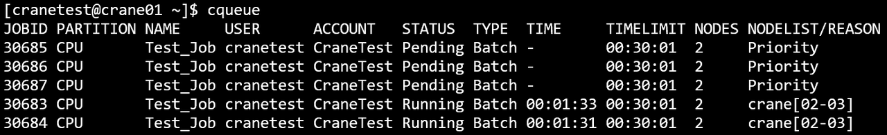
- 主要输出项
- JobId：作业号
- Partition：作业所在分区
- Name: 作业名
- User：作业所属用户
- Account：作业所属账户
- Status：作业状态
- Type： 作业类型
- TimeLimit：作业时间限制
- Nodes：作业所分配节点数
- NodeList： 作业运行的节点名
主要参数
- -A/--Account string：指定查询作业所属账户，指定多个账户时用逗号隔开
- -C/--config string：配置文件路径
- -o/--format string：指定输出格式。由百分号（%）后接一个字符或字符串标识。 在 % 和格式字符/字符串之间用点（.）和数字，可指定字段的最小宽度。支持的格式标识符或字符串（不区分大小写）：
- %a/%Account： 显示作业关联的账户
- %c/%AllocCpus：显示作业已分配的 CPU 数量
- %e/%CpuPerNode：显示作业每个节点请求的 CPU 数量
- %h/%ElapsedTime：显示作业自启动以来的已用时间
- %j/%JobId：显示作业 ID
- %k/%Comment：显示作业的备注
- %l/%NodeList：显示作业正在运行的节点列表
- %m/%TimeLimit：显示作业的时间限制
- %n/%MemPerNode：显示作业每个节点请求的内存量
- %N/%NodeNum：显示作业请求的节点数量
- %n/%Name：显示作业名称
- %P/%Partition：显示作业运行所在的分区
- %p/%Priority：显示作业的优先级
- %Q/%QOS：显示作业的服务质量（QoS）级别
- %R/%Reason：显示作业挂起的原因
- %r/%ReqNodes：显示作业请求的节点
- %S/%StartTime：显示作业的开始时间
- %s/%SubmitTime：显示作业的提交时间
- %t/%State：显示作业的当前状态
- %T/%JobType：显示作业类型
- %u/%Uid：显示作业的 UID
- %U/%User：显示提交作业的用户
- %x/%ExcludeNodes：显示作业排除的节点
- 每个格式标识符或字符串可用宽度说明符修改（如 "%.5j" ）。 若指定宽度，则会被格式化为至少达到该宽度。 若格式无效或无法识别，程序会报错并终止。
- 例：--format "%.5j %.20n %t" 会输出作业 ID（最小宽度 5）、名称（最小宽度 20）和状态。
- -F/--full: 显示完整的内容，如果未指定，默认每项输出30个字符
- -h/--help: 显示帮助
- -i/--iterate uint：指定间隔秒数刷新查询结果。如 -i=3表示每隔三秒输出一次查询结果
- -j/--job string：指定查询作业号，指定多个作业号时用逗号隔开。如 -j=2,3,4
- --json：json格式输出命令执行结果
- -m/--MaxVisibleLines uint32：指定输出结果的最大条数。如-m=500表示最多输出500行查询结果
- -n/--name string：指定查询作业名，指定多个作业名时用逗号隔开
- -N/--noHeader：输出隐藏表头
- -p/--partition string：指定查询作业所在分区，指定多个分区时用逗号隔开
- -q/--qos string：指定查询作业的QoS，指定多个QoS时用逗号隔开
- --self：查看当前用户提交的作业
- -S/--start：显示作业的开始时间（pending作业显示预期开始时间）
- -t/--state string：指定查询作业状态，指定多个状态时用逗号隔开
- -u/--user string：指定查询作业所属用户，指定多个用户时用逗号隔开
- -v/--version：查询版本号
例：
cqueue -h
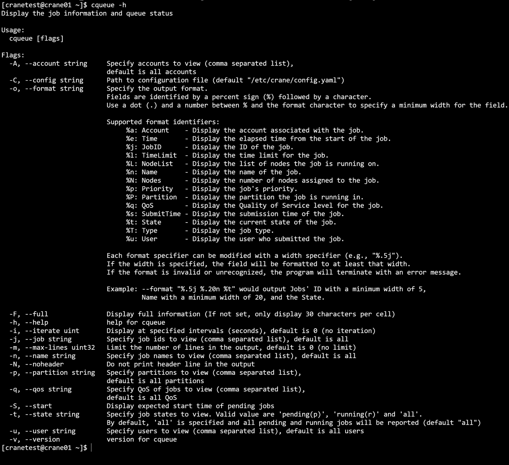
cqueue -N

cqueue -S
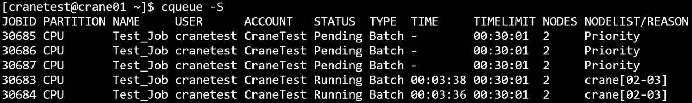
cqueue -j 30674,30675
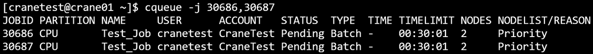
cqueue -t Pending
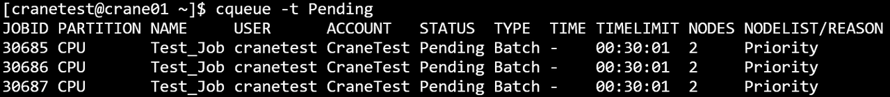
cqueue -t r
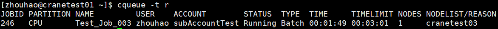
cqueue -u cranetest
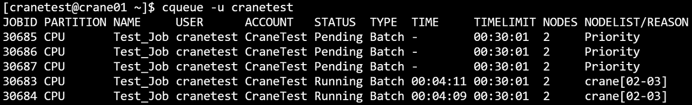
cqueue -A CraneTest
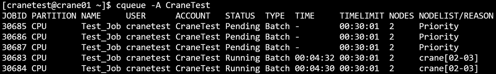
cqueue -i 3
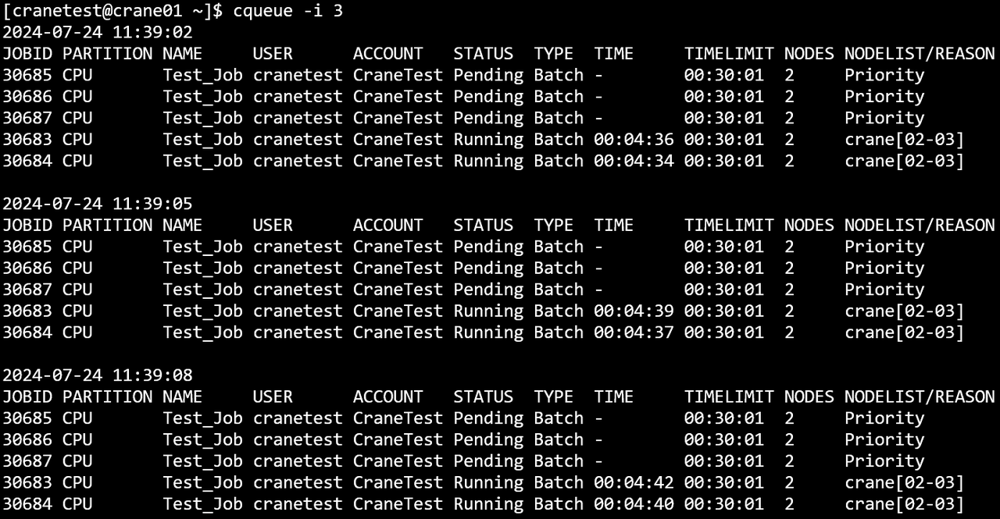
cqueue -p CPU
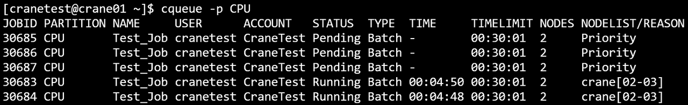
cqueue -m 3
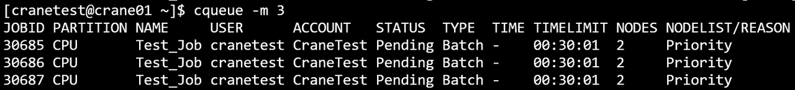
cqueue -o="%n %u %.5j %.5t %.3T %.5T"
format中的指定列的对应缩写对照：
- j-TaskId；n-Name；t-State；p-Partition；u-User；a-Account；T-Type；I-NodeIndex；l-TimeLimit；N-Nodes
cqueue -n test
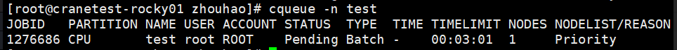
cqueue -N
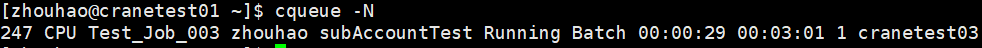
cqueue -q test_qos
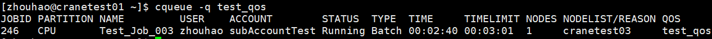
cqueue --self
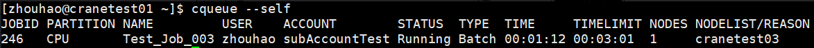
cqueue -t Running -S 2024-01-02T15:04:05~2024-01-11T11:12:41
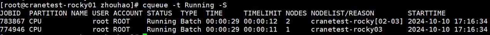